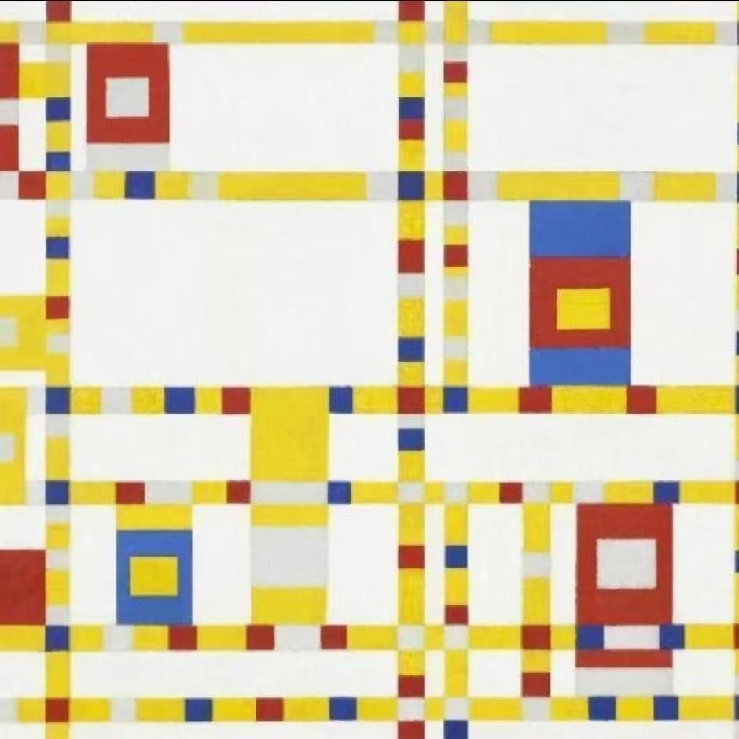

团队成员
徐常亮博士
实验室负责人
北大本科，普林斯顿博士，国科大杭高院研究员/牧语工厂创始人。
主持和承担包括国家重点研发计划/省市各级重点研发计划。
工作经历：
- 曾任阿里云大数据总经理、大数据平台ODPS/MaxCompute技术负责人和杭州城市大脑技术骨干
- MaxComputer和城市大脑都各自获得浙江省科技进步一等奖
- 曾负责国家863计划信息技术领域"云计算关键技术与系统（一期）"项目大数据板块
- 代表阿里云答辩了大数据系统软件国家工程实验室
- 曾任媒体融合生产技术与系统国家重点实验室学术带头人
- 负责智能化视频生产系统研究部
- 牵头与新华社等媒体机构、清华等高校制定了全球首个机器生产内容（MGC/AIGC)自动化分级标准
彭剑
林美伶
蒋一帆

陈龙荣
薛逸博
